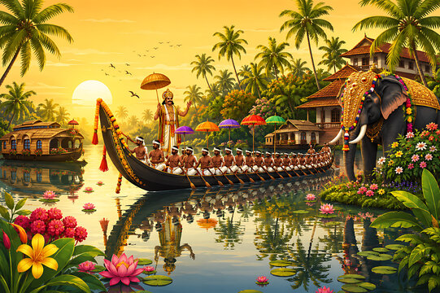

Onam is the premier ten-day harvest and cultural festival of Kerala, celebrating agricultural abundance and the legendary annual homecoming of the benevolent King Mahabali. Celebrated by Malayalis worldwide during the month of Chingam (August–September), the festival commemorates a mythological golden age of absolute peace, equality, and prosperity. To honor the beloved king's return, homes are decorated with beautiful, concentric Pookkalam (floral carpets), and families dress in traditional gold-bordered cream Kasavu attire. The celebration culminates on the grand day of Thiruvonam with the Onam Sadya—a massive, multi-course vegetarian feast served on banana leaves—alongside vibrant cultural spectacles like high-energy Vallam Kali (snake boat races) and the playful Pulikali tiger dance.